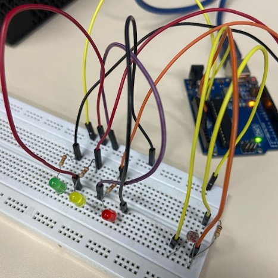
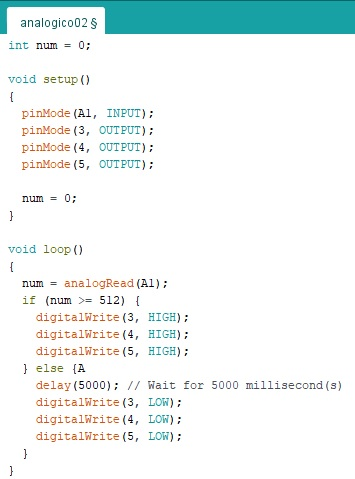
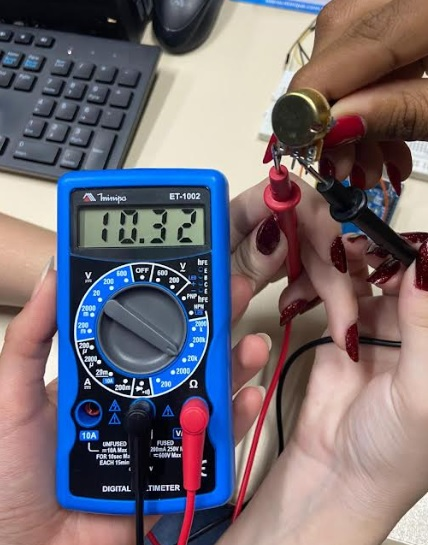
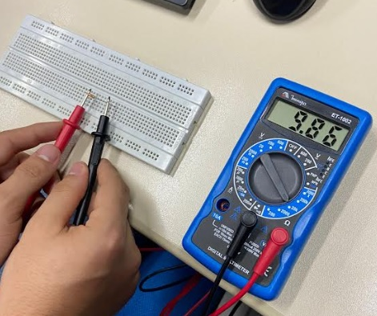
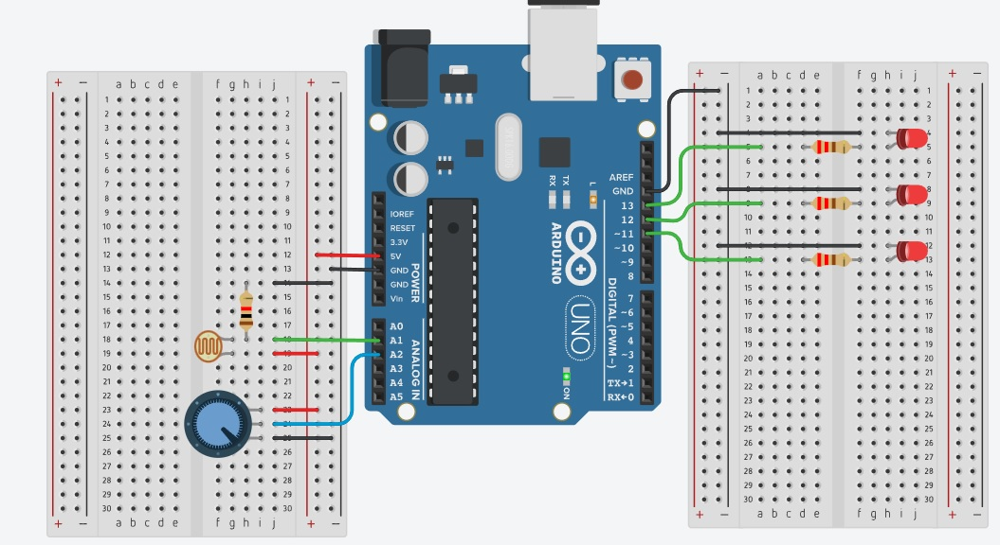

LDR com a montágem física no ARDUÍNO

Fonte: O autor
Exemplo de código C++ no IDE ARDUÌNO

Fonte: O autor
Filmagem do controle de iluminação
Medidas realizadas com o multímetro

Fonte: O autor

Fonte: O autor
Ligação do LDR e LEDs no Tinkercad

Fonte: Tinkercad